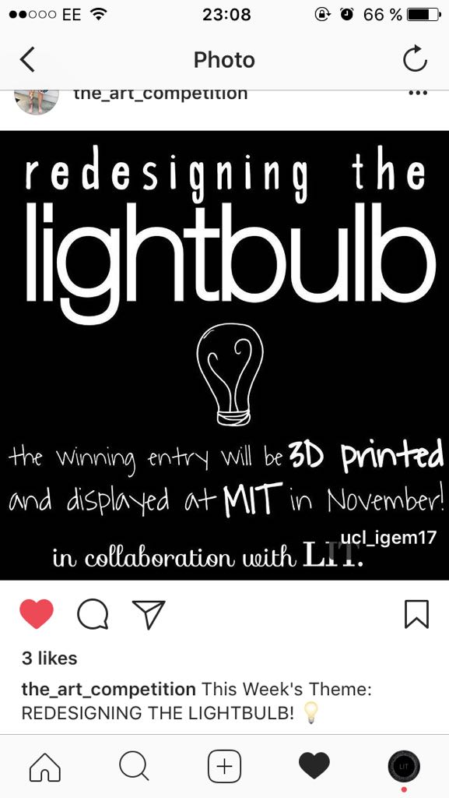
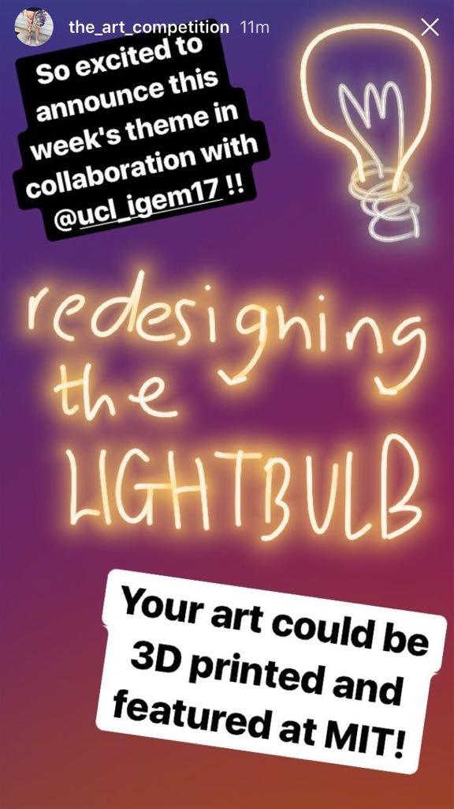
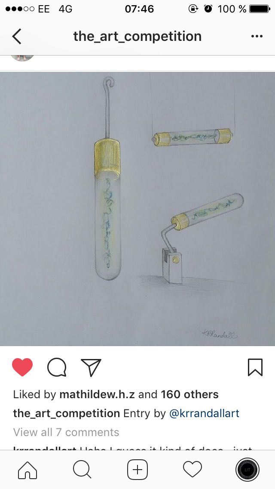
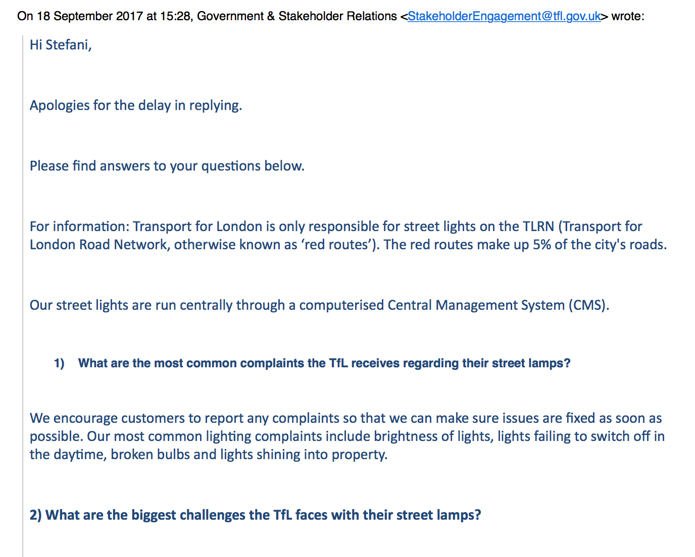

We called for artists on Instagram to help us design an aesthetically pleasing bacterial bulb, reaching 78,000 people and receiving 133 submissions. Their designs informed our prototype and we integrated their sketches in our OptoFlux mathematical model and our entrepreneurship designs. The best ones considered safety and the social implications of deploying a bacterial light bulb in real life.

the_art_competition organises weekly art competitions on different topics, reaching to 78,000 followers. Together we wanted to encourage artists to think about how complex the implementation of synthetic biology technologies can be in real life and how they may influence this process. So, we designed the Instagram competition to have artists ask themselves new questions and for us to learn what aesthetics could be incorporated into the bacterial light bulb.
 We asked participants to consider in their submissions societal impacts, where the bulbs would function (private or public spaces?), the aesthetics and a future where bacteria are more integrated in our lives (awesome or dystopic?).
Entries were very well thought out, with designs clearly depicting co-culturing of E. coli and cyanobacteria as well as its potential usage in private and public spaces.
We selected a winner based on the thoughtfulness shown in the design and the number of likes. The design was taken as the starting point for our mathematical modelling, to see how we can combine aesthetic and engineering requirements into a prototype.
We talked to Dr Ralph Müller and Jan from the ESA to see how we could extend the use of bacterial architecture from Earth to outer space, in the end influencing what Biobrick we improved for our Gold Medal. The initial premise was that taking large amounts of building material when colonising new planets would be inefficient. Then, we moved onto other uses of our bacteria in space.
We contacted two practicing architects with experience in combining biology and architecture to understand needs in the field and how our Barchitecture application could address them. After our conversations, we changed our focus from small scale to large scale 3D structures.

Our first conversation was with Richard Beckett, a practicing architect from the Bartlett School of Architecture. After discussing our vision for architectural structures made from bacteria, we considered two directions for our Barchitecture technology.

These ideas lead us to get in touch with Rachael Armstrong – a former TED Fellow who explores the intersection of biology and architecture. Our Skype call was beneficial to learn about thinking on larger scales in terms of both time and space. So, we formulated a vision for our Barchitecture application that would incorporate living organisms in buildings that could create structures from bacteria depending on natural and artificial light cycles.
The next steps to take would be to experiment with our cells and different materials and see how light-guided adhesion could benefit other structures. We encourage future iGEM teams to get in touch with more architects and develop prototypes for the classic architecture critique sessions.

We contacted a bioluminescence start-up, an artist and Transport for London about the challenges in bioluminescent bulbs and what criteria our bacterial light-bulb would need to meet to be deployed as street lamps on London’s roads. We then used the relevant information to tailor our mathematical modelling and entrepreneurship.
Our conversations with relevant stakeholders to bioluminescent bacteria gave us ideas to produce DIY kits to implement bioluminescence in daily life and insight into how to deploy the light bulb on the streets of London.
After Glowee decided that they’re too cool for school, we reached to Teresa van Dongen, a Dutch artist who designed and produced a bioluminescent light-bulb with bacteria - Ambio.
We learnt about her experience with bioluminescent bacteria and more importantly, about the human-centred aspects of such a product: aesthetics, use and safety. We talked about the engineering aspects that she experimented with and started a conversation about what potential biological light switches have for the future of design.
The Skype call led to an idea of creating DIY kits, giving people the possibility to build their own bacterial powered light-bulb, making this new concept more exciting and pushing more people to want to learn about the science behind bioluminescent organisms.
We also felt that our bacterial bulb could contribute to sustainable living and alternative energy. So, after the Instagram competition that inspired our mathematical modelling and prototype, we considered engaging with stakeholders that would use bacterial light bulbs for street illumination. We reached to the City of Westminster Council and Transport for London to learn about the needs and requirements for a bacterial light bulb to be implemented in real life.
With the later we talked about how to deploy bacterial light bulbs as street lamps. We integrated the outcomes of this discussion in the design and entrepreneurship related to the light bulb.
Transport for London is responsible for the illumination of 5% of the city’s roads. A rough estimation suggests that 1213mW () are consumed per day to illuminate these streets. The whole system is centralised through a computerised system that monitors consumption and lighting hours.
We learned that currently, with the opportunity for new technology, TfL considers the cost, longer-term energy savings, maintenance, ability to dim the lighting according to time of day and the ability to meet lighting level requirements. We were also interested in the challenges that they faced now: lowering energy consumption as a top priority; complaints about broken bulbs, lights shining into property and the brightness of lights.
All this information contributed to our entrepreneurship analysis, in the form of the needs and challenges to be addressed. At the end, we submitted to TfL a short proposal for review, outlining our bacterial light-bulb and the technology. The next step is to go through a few iterations in collaboration with TfL and to improve on the current prototype.
At ARUP we presented our idea of Barchitecture helping overcome the depletion of raw materials, the increasing need to create sustainable buildings and the need for rapid structure building in the case of natural disasters. We produced a document to take the idea to a design phase with engineers from ARUP.